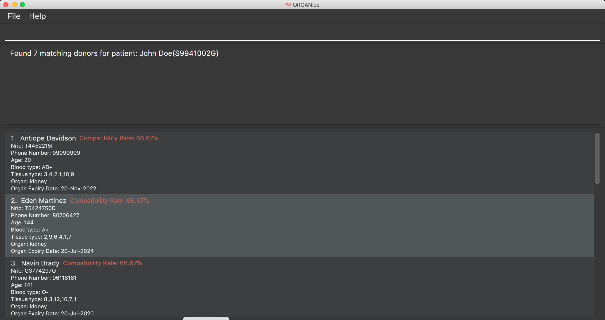

By: CS2103T-T13-1 Since: Sep 2019 Licence: MIT
- 1. Introduction
- 2. Quick Start
- 3. Components of ORGANice
- 4. Features
- 4.1. Viewing help :
help - 4.2. Adding a person:
add - 4.3. Listing persons :
list - 4.4. Editing a person :
edit - 4.5. Locating persons by name:
find - 4.6. Deleting a person :
delete - 4.7. Detecting matches:
match - 4.8. Sorting matches:
sort - 4.9. Processing potential matches:
processing - 4.10. Mark as done :
done - 4.11. Exiting the program :
exit - 4.12. Saving the data
- 4.13. Detecting duplicates
- 4.1. Viewing help :
- 5. Future improvements
- 6. FAQ
- 7. Command Summary
- 8. Glossary
1. Introduction
This user guide explains how to use ORGANice to manage organ transplants. ORGANice is a desktop application for hospital administration staff who prefer to use Command Line Interface applications to manage organ transplants.
With ORGANice, you can easily do the following:
-
organise information about patients, doctors, and donors
-
find matches between organ donors and patients
If you are a hospital administrator and would like to use ORGANice, check out Section 2, “Quick Start” to get started.
2. Quick Start
Below is a list of things to do to use the application:
-
Ensure you have Java
11or above installed in your computer.
If not, install it here. -
Download the latest
organice.jarhere. -
Copy the JAR file to the folder you want to use as the home folder for your application.
-
Double-click the JAR file to start the application. The application should appear in a few seconds. Figure 1 shows how the application looks like after starting it.

If what you are seeing on your screen looks like what is shown in Figure 1, congratulations! You have successfully started the application. Now that you have have succeeded, it is time to learn about the various components in this application.
3. Components of ORGANice
This section aims to introduce you to the various components of ORGANice. We will be using Figure 2, which has all the components of ORGANice labelled.

The following list explains each component and the function of that component:
-
Component: Command Box
-
Function of component: the Command Box is a text box for you to type in commands. Commands are instructions to ORGANice to perform a feature.
-
-
Component: Message Display Box
-
Function of component: the Message Display Box displays messages after executing commands. These messages aim to let you know if you have succeeded or failed in executing a command.
-
-
Component: Person List
-
Function of component: the Person List is a display of people’s information stored in ORGANice. You can scroll down this list to see more people in this application.
-
Now that you know the components of ORGANice, let’s move on to Section 4, “Features” to learn how to use the features in ORGANice.
4. Features
This section will introduce you to the list of features and commands in this application.
Each feature is triggered by a command with a specific format.
The list below explains how the format of the commands should be interpreted:
Command Format
-
The first word in a command is the command word. The rest of the words are parameters, which are either compulsory or optional.
e.g. in a commandadd n/NAME p/PHONE,addis the command word whilen/NAME p/PHONEare parameters. -
Words in bold are the parameters to be supplied by the user
e.g. inadd n/NAME,NAMEis a parameter which can be used asadd n/John Doe. -
Parameters can be in any order
e.g. if the command specifiesn/NAME p/PHONE,p/PHONE n/NAMEis also acceptable.
In ORGANice, a person’s data is represented by attributes. Attributes
refer to personal particulars such as name, type of person and blood type.
The following list shows the list of attributes that can be specified for a person and the criteria for valid inputs:
List of Attributes:
-
n/NAME: the name of the person
-
Applicable to: patients, doctors, donors
-
Valid input: alphabets
-
-
t/TYPE: the type of person
-
Applicable to: patients, doctors, donors
-
Valid input: patient/donor/doctor
-
-
o/ORGAN: the type of organs
-
Applicable to: patients, donors
-
Valid input: kidney
-
-
b/BLOODTYPE - the blood type of the person
-
Applicable to: patients and donors
-
Valid input: A/B/AB/O
-
-
p/PHONE - contact number of a person
-
Applicable to: patients, doctors, donors
-
Valid input: 8 digit number sequence, starting with 6, 8 or 9
-
-
ic/NRIC - NRIC number of a person
-
Applicable to: patients, doctors and donors
-
Valid input: any sequence of alphabets and numbers that fulfill these criteria:
-
starts with a capital S, F, T, or G
-
followed by a 7 digit number sequence
-
ends with a capital letter
-
-
-
pr/PRIORITY - priority of the patient, the value of which is determined by a doctor
-
Applicable to: patients
-
Valid input: high/medium/low
-
-
a/AGE - age of a person
-
Applicable to: patients and donors
-
Valid input: a number
-
-
d/DOCTOR - doctor in charge of a patient
-
Applicable to: patients
-
Valid input: NRIC of the doctor
-
-
tt/TISSUE TYPE - the type of tissues
-
Applicable to: patients and donors
-
Valid input: a string of 6 numbers (from 1 - 12), separated by commas
-
-
exp/EXPIRY - expiry date of a donor’s organ
-
Applicable to: donors
-
Valid input: a valid date in DD-MMM-YYYY format
-
4.1. Viewing help : help
There may be times where you do not understand how ORGANice works, or you need a simple reminder on how to use ORGANice. This command allows you to access the user guide to ORGANice.
-
Type
helpin the Command Box and press Enter. -
A new window is launched, as shown in Figure 3. Open the link in a browser to read this document.
-
Click the x button to close the window and return to the default display.

4.2. Adding a person: add
This command allows you to add a patient, doctor, or donor to ORGANice with the attributes given, depending on what is specified.
There are two methods to add a person:
-
Method 1: Normal Add
-
Method 2: Add with system prompting
To understand how to add a person via the 'Normal Add' method, go to Section 4.2.1, “Normal Add”. To understand how to add a person via the 'Add with system prompting' method, go to Section 4.2.2, “Add with system prompting”.
4.2.1. Normal Add
Normal add refers to specifying all the attributes in the command. To add, type in the following commands to add a person:
Format for adding patients: add t/patient n/NAME o/ORGAN b/BLOOD TYPE tt/TISSUE TYPE
p/PHONE pr/PRIORITY ic/NRIC d/DOCTOR a/AGE
Format for adding donors: add t/donor n/NAME o/ORGAN b/BLOOD TYPE tt/TISSUE TYPE
p/PHONE ic/NRIC exp/EXPIRY a/AGE
Format for adding doctors: add t/doctor n/NAME ic/NRIC p/PHONE
After adding a person, ORGANice will display a form which contains the attributes of the person. Press Enter to confirm the details.
| View the List of Attributes in the beginning of Section 4, “Features” to find out what each attribute mean. |
Examples:
-
add t/patient n/John Doe o/kidney b/A tt/1,2,3,4,5,6 p/98765432 pr/high ic/S9988330G d/S2235456D a/29 -
add t/donor n/Betsy Kim o/kidney b/AB tt/2,5,7,8,9,10 p/99998888 ic/S2345678H exp/23-Nov-2020 a/21 -
add t/doctor n/Lim Chu Kang p/91054444 ic/S5678908D
4.2.2. Add with system prompting
In this mode, the user can add the person’s attributes one by one. After entering an attribute, the system will prompt the user input for another attribute.
Format: add t/TYPE
When the user type in the command above, a form will be displayed. For example, if a user wants to add a patient,
type add t/patient to the command box. The form will be as below:

ORGANice will prompt the user to type in each attribute, one by one until all the fields are filled.
For example, when a user wants to add a patient, the display box will prompt the user to enter the patient’s name.
For the user to add a patient that is named "John Doe", type John Doe and then press enter.
After entering the name, the patient’s name will be displayed in the form, as shown below.

Inputs for each attribute will be checked, if it is a valid input then the user input will automatically reflected on the form, if it is not valid, ORGANice will show a warning to the user.
The following screenshot shows the warning that ORGANice will give to the user if the input is not valid:

After all of the attributes have been specified, the user can type /done to add the person to the ORGANice list of persons
or /abort if the user decided not to add the person into the list.

When the user typed /done the UI will changed back to it’s original state and shows a success message suggesting that
the user has successfully added a new person into the list.

4.3. Listing persons : list
Shows a list of all doctors, donors, or patients in ORGANice, depending on the type of person specified. Shows all persons in ORGANice if no type is specified.
Format: list
Optional parameters: Type parameter - t/TYPE
Examples:
-
list
Lists all patients, doctors and donors in the records. -
list t/patient
Lists all patients only.
4.4. Editing a person : edit
Edits the information of the person with the specified NRIC to the attributes specified.
It is up to the user to specify which attributes should be updated.
Format: edit ic/NRIC
Optional parameters: any parameter from the [List of Attributes]
After editing, ORGANice will display a form to show what information will be stored about the person after confirming the changes. The user is free to edit the fields before changes are confirmed.
Examples:
-
edit ic/S8732457G p/91234567
Edits the phone number of the specified patient to be91234567. -
edit ic/S8732457G n/Betsy Crower b/A
Edits the name and blood type of the specified donor to beBetsy CrowerandArespectively.
4.5. Locating persons by name: find
Finds persons whose attributes contain any of the given keywords.
A list of patient/donor/doctor’s information whose attributes partially match the keywords
will be displayed.
Format: find
Optional parameters: any parameter from [List of Attributes]
Examples:
-
find t/patient n/Lim
Returns any patient whose name contains 'Lim'
4.6. Deleting a person : delete
Deletes the specified person from ORGANice.
Match history of a deleted patient or donor with other patients/donors will be removed.
Format: delete ic/NRIC
Example:
delete ic/S98654322D
Deletes a person with the NRIC S98654322D in ORGANice.
4.7. Detecting matches: match
This command runs a kidney matching test on patients and donors in ORGANice and displays the match results. Refer to Section 6, “FAQ” for a better understanding of the procedure for kidney matching.
You can either run a kidney matching test on all patients and donors or find matching donors for a specific patient. To learn how to run kidney matching tests on all patients, refer to Section 4.7.2, “Matching all patients”. To learn how to run kidney matching tests on a specific patient, refer to Section 4.7.1, “Matching a specific patient”.
4.7.1. Matching a specific patient
This section will explain how to run kidney matching tests on a specific patient and run you through an example.
To run a match of a specific patient, type in a command of the format match ic/NRIC.
Here is an example. Suppose you want to match a specific patient called "John Doe" and his NRIC is "S1234568R". This is what you can do:
-
Type
match ic/S1234568Rin the Command Box and press Enter. -
The list of donors and their success rate are displayed as shown in the screenshot below. The success rate is a number which indicates the degree of compatibility between the patient and donor.

4.7.2. Matching all patients
This section will explain how to run kidney matching tests on all patients stored in ORGANice and run you through an example. To match all the patients in ORGANice, do the following:
-
Type
match ic/allin the command box and press Enter. -
The list of patients and the number of matching donors each patient have are displayed in the screenshot below.

4.8. Sorting matches: sort
Users can specify how they want the patient-donor pairs to be sorted.
Sorting is done by passing in optional parameters to the match command.
Matches can be sorted according to three categories:
-
Success rate of match
-
Priority of patient
-
Date of expiry of donors' organs
To return a sorted list of patient-donor pairs, include the sort/ flag in the command.
Format:
match ic/NRIC sort/[rate/priority/expiry]
Typing this command causes the application to display a list of matches sorted according to the specified criteria. More than one sorting criteria can be included.
Examples:
-
match ic/S7778983D sort/rate -
match ic/S7778983D sort/rate, priority, expiry
4.9. Processing potential matches: processing
After finding a list of matches, the hospital is free to schedule a cross-matching test between
a specific donor and patient.
After typing this command, the following changes occur:
-
A list will be generated to show the necessary tasks the hospital need to do for the respective donor and patient.
-
The list will be unique to the specific donor and patient pair
-
The list can be updated using
done TASK NUMBER
The list will be saved after the command exit is executed. The page will then stop displaying the list.
Format: processing ic/PATIENT NRIC ic/DONOR NRIC
The order of the NRICs does not matter.
Example:
processing ic/S6764235G ic/S1234567D
4.10. Mark as done : done
After the hospital has the results of the cross matching test, they can update the results in ORGANice. Cross matching tests have two possible results: pass or fail.
Format: done icP/NRIC OF PATIENT icD/NRIC OF DONOR res/[pass/fail]
icP/NRIC OF PATIENT refers to the NRIC of the patient, while icD/NRIC OF DONOR
refers to the NRIC of the donor.
The following section outlines what happens based on the two results:
If the result of the cross matching is a 'pass':
-
It is up to the hospital staff to schedule an organ transplant surgery between the patient and donor.
-
Mark the patient and donor as 'done', based on the command format.
-
After running the command, the system removes the patient and donor from the matching pool. The patient and donor statuses will be marked to 'done'.
If the result of the cross matching is a 'fail':
-
Run the command based on the given format
-
The patient and donor will be added back to the matching pool for match detection with other patients and donors.
-
The patient-donor pair will not be considered a potential match in future match detection.
Example:
-
done icP/S7896432A icD/S4578902G res/pass -
done icP/S7896432A icD/S4578902G res/fail
4.11. Exiting the program : exit
Exits the program.
Format: exit
4.12. Saving the data
Data is saved in the hard disk automatically after any command that changes the data.
There is no need to save manually.
4.13. Detecting duplicates
When adding a person, ORGANice will detect if the input is a duplicate of another person in the list. A duplicate is defined as: Two persons of the same type who have the same NRIC.
When a duplicate is detected, ORGANice will indicate that there is such a person in ORGANice so the inputs should be changed.
5. Future improvements
This section describes features that can be added or improved in version 2.0. It is further divided into two sub-sections: Proposed New Features and Proposed Extensions.
5.1. Proposed New Features
This section describes features that can be added to ORGANice in version 2.0.
5.1.1. Filtering persons: filter
Filters a patient/doctor/donor by specific attributes.
Format: filter [patient/donor/doctor] [options]
Returns a list of patients/doctors/doctors that has the specified attributes.
Examples:
-
filter t/patient g/M -
filter t/donor g/M n/Chua
5.2. Proposed Extensions
This section describes features that can be improved on and its proposed improvements.
5.2.1. Mass addition of data
Add more than one patient/doctor/donor from data in a specified text file.
A duplicate is defined as: two persons of the same type having the same ID. When a duplicate is detected, it prompts the user to change the data in the text file.
5.2.2. Supporting more types of transplants
Currently ORGANice has patient-donor matching for kidneys only. Future versions can include matching for
more types of organs.
5.2.3. Processing a match: process
Emails the doctor in charge of a patient when an organ match for the patient is found.
Format: process NRIC
5.2.4. Advanced find
Finding in v2.0 is more advanced with the implementation of fuzzy search and partial matching of keywords.
6. FAQ
Q: How do I transfer my data to another computer?
A: Install the app in the other computer and overwrite the empty data file it creates with the file
that contains the data of your previous ORGANice folder.
Q: What are the steps to find a patient-donor kidney match?
A: There are three steps to finding a patient-donor match:
-
Do a blood test to determine donor and patient blood type.
-
Do a tissue typing test to determine the HLA antigens of the patient and the donor.
-
Do a cross match, which is a trial transfusion.
7. Command Summary
This section summarises the commands to use this application. The following list contains the summary of the commands.
-
Add (Normal Mode):
-
Add patient:
add t/patient n/NAME o/ORGAN b/BLOOD TYPE tt/TISSUE TYPE p/PHONE pr/PRIORITY ic/NRIC d/DOCTOR a/AGE -
Add donor:
add t/donor n/NAME o/ORGAN b/BLOOD TYPE tt/TISSUE TYPE p/PHONE ic/NRIC exp/EXPIRY a/AGE -
Add doctor:
add t/doctor n/NAME ic/NRIC p/*PHONE
-
-
Add (System Prompt Mode):
add t/TYPE -
Delete :
delete ic/NRIC -
Edit :
edit ic/NRIC-
Optional parameters: any parameter from [List of Attributes]
-
-
Find :
find-
Optional parameters: any parameter from [List of Attributes]
-
-
Match :
match [all/ic]-
Optional parameters:
sort/[rate/expiry/priority]
-
-
Processing:
processing icP/NRIC of Patient icD/NRIC OF DONOR -
List :
list t/TYPE -
Help :
help -
Done : `done icP/NRIC of Patient icD/NRIC OF DONOR `
-
Exit :
exit
8. Glossary
This section contains a list of words used in this user guide and its intended meaning. It is meant to clarify the meaning and context of the words used in this user guide.
-
user: refers to hospital administration staff who are using this desktop application
-
person: refers to doctors, patients or donors
-
blood type match: refers to a donor and patient whose blood types are compatible.
-
tissue match: refers to a donor and patient whose tissues match
-
cross match: a trial blood transfusion, where donor and patient’s blood are mixed in a test tube to check
for harmful interactions between patient and donor’s blood -
potential match: refers to a donor-patient pair whose organs pass the blood test and tissue typing test.
-
match: refers to a donor-patient pair whose organs pass all three matching tests
-
duplicate: refers to two persons of the same type which have the same NRIC